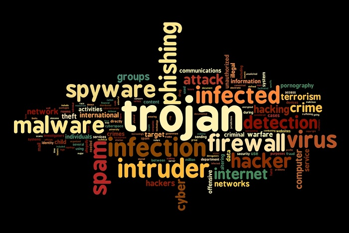

A computer virus is a malware program that, when executed, replicates by inserting copies of itself (possibly modified) into other computer programs, data files, or the boot sector of the hard drive; when this replication succeeds, the affected areas are then said to be "infected". Viruses often perform some type of harmful activity on infected hosts, such as stealing hard disk space or CPU time, accessing private information, corrupting data, displaying political or humorous messages on the user's screen, spamming their contacts, logging their keystrokes, or even rendering the computer useless. However, not all viruses carry a destructive payload or attempt to hide themselves—the defining characteristic of viruses is that they are self-replicating computer programs which install themselves without user consent.
Virus writers use social engineering and exploit detailed knowledge of security vulnerabilities to gain access to their hosts' computing resources. The vast majority of viruses target systems running Microsoft Windows, employing a variety of mechanisms to infect new hosts, and often using complex anti-detection/stealth strategies to evade antivirus software. Motives for creating viruses can include seeking profit, desire to send a political message, personal amusement, to demonstrate that a vulnerability exists in software, for sabotage and denial of service, or simply because they wish to explore artificial life and evolutionary algorithms.
Computer viruses currently cause billions of dollars' worth of economic damage each year, due to causing systems failure, wasting computer resources, corrupting data, increasing maintenance costs, etc. In response, free, open-source antivirus tools have been developed, and an industry of antivirus software has cropped up, selling or freely distributing virus protection to users of various operating systems. Even though no currently existing antivirus software is able to uncover all computer viruses (especially new ones), computer security researchers are actively searching for new ways to enable antivirus solutions to more effectively detect emerging viruses, before they have already become widely distributed.
How To Remove Viruses?

Many websites run by antivirus software companies provide free online virus scanning, with limited cleaning facilities (the purpose of the sites is to sell antivirus products). Some websites—like Google subsidiary VirusTotal.com—allow users to upload one or more suspicious files to be scanned and checked by one or more antivirus programs in one operation. Additionally, several capable antivirus software programs are available for free download from the Internet (usually restricted to non-commercial use). Microsoft offers an optional free antivirus utility called Microsoft Security Essentials, a Windows Malicious Software Removal Tool that is updated as part of the regular Windows update regime, and an older optional anti-malware (malware removal) tool Windows Defender that has been upgraded to an antivirus product in Windows 8.
Some viruses disable System Restore and other important Windows tools such as Task Manager and CMD. An example of a virus that does this is CiaDoor. Many such viruses can be removed by rebooting the computer, entering Windows safe mode with networking, and then using system tools or Microsoft Safety Scanner. System Restore on Windows Me, Windows XP, Windows Vista and Windows 7 can restore the registry and critical system files to a previous checkpoint. Often a virus will cause a system to hang, and a subsequent hard reboot will render a system restore point from the same day corrupt. Restore points from previous days should work provided the virus is not designed to corrupt the restore files and does not exist in previous restore points.